ML General Knowledge
Introduction to Machine Learning General knowledge
2 hours to read
Main References
- Introduction to Data Science (NYU CDS 1001)
- Book: Data Science for Business
- Notes of Probability and Statistics for Data Science (NYU CDS 1002)
- Optimization and Computational Linear Algebra for Data Science (NYU CDS 1002)
- Bruce Yang: The Breadth of Machine Learning: Part I
- K-Means Clustering in Python: A Practical Guide
Data Science Overview
Categories
Basic Categories
- Supervised Learning
- Regression
- Classfication & Class Probability Estimation
- Unsupervised Learning
- Clustering
Categories by Parameters
- Parametric Modeling
- Linear Regression
- SVM
- Non-Parametric Modeling
- Decision Tree
- KNN
- K-Means
Categories for Classfication
- Discrimative
- Logistic Regression
- Generative
- Naive Bayes
Categories by Application
- Similarity matching attempts
- Co-occurrence grouping
- Profiling (behavior description)
- Link prediction
- Data reduction
- Causal modeling
Cross Industry Standard Process for Data Mining
- Business Understaning
- Data Understanding
- Data Preparation
- Modeling
- Evaluation
- Deployment
Components: Things Data Scientist has to Consider
- Data & Sampling
- Define Instance
- Sampling
- Cleaning data
- Features Representation
- Feature Engineering
- Feature Selection ( <- 4 / 6)
- Model ( <- 6)
- Objective Function / Loss Function (For Model Training)
- Algorithm for Optimizing (Accelerate the Process)
- Evaluation Metirc (For Application)
Concerns
Concept Drift: P(X), P(Y) or P(Y|X) that changes over time Methods to handle it:
- Monitor predictive performance
- Retrain as often as possible
- Test balance between data recency and data volume
Data & Sampling
Think about:
- Where to get data
- How to get data
- What does the data look like
- What’s the limits
Souces:
- Internal ETL Process
- Production Logging / Sampling
- Web Scraping / API
- Survey / Panel
Define the Instance of the Data
-
What should be sampled?
- Both postitives and negatitives are drawn from the same population or process
- Only observe positives and find appropriate negatitives
-
The granularity and range of the instance
- Time
- Geo
- Product Level
-
Are intances independent of each other?
- Geo-Spatial data
- Time series data
- Pairwise instances(social networks, search)
Define the Target Variable: Based on Application and Be Creative
Sampling
- Down-Sampling
- Reduce comupational burden of training
- Require Less Data: Less complex alogrithms & models with information rich features [Check Learning Curves to see the ]
- Measure empirically the effect of down-sampling (samling size): Learning Curves with X-axis Sample Size.
- Up-Sampling / Down-Sampling: Rebalance classes
- When do model evaluation, should still based on the real base rate
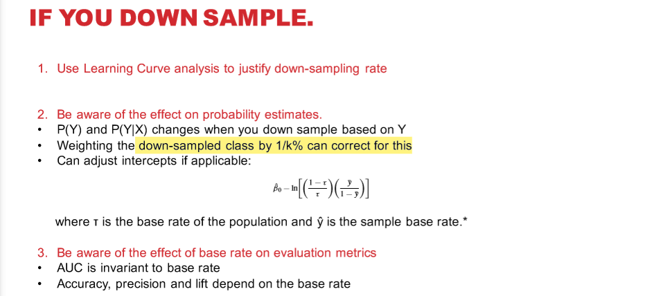
- When do model evaluation, should still based on the real base rate
Selction Bias
Implications:
- Affect generalizability
- Affect identifiablity of model parameters
Unbias(random) Sample Test
- Independent on X (don’t want to be biased): P(Sampled) = P(Sampled | X = x) or P(X = x) = P(X = x | Sampled)
- Independent on Y (sometimes intentional bias on Y): P(Sampled) = P(Sampled | Y = y) or P(Y = y) = P(Y = y | Sampled)
Intentional Selection Bias
- Often select based on target variable
- It is rational and based on business and economic factors
What to do
- Avoid it
- Adjust it
- Expect it
Data Cleaning & Exploratory Data Analysis
Goals to do EDA
- Summarize main characteristics of the data [Univariate]
- Gain better understanding of the data set [Univariate]
- Uncover relationships between variables [Bivariate]
- Know the data set from a global view [Multivariate]
- Extract important variables
Descriptive Statistics
- Know data types
- Numeric
- Continuous
- Discrete
- Categorical
- Ordinal
- Nominative
- Date
- Numeric
- Summariz statistics using pd.describe()
- Distribution: Box Plots, Scatterplot
Data Cleaning
-
Missing Values
- Check with data collection source
- Delete: Random & Rare
- Fill Constants: Mean, Median, Dummy Variables
- Exploit Mulit-Collinearity: Estimate E[missing given X]
-
Data Formating
- Correct data types
- Apply calculations to incoherent representations
-
Outliers
- Delete
-
Scale Difference
- Normalization
- Simple Feature Scaling (X / X_max)
- Min-Max
- Z-score
- Normalization
-
Skewed Distribution (for Linear Regression)
- Standardize: Log()
-
Turning categorical variables into quantitative variables
- One-hot encoding
Bivariate
-
Correlation for Numerical
-
Covariance Matrix & Heatmap
-
Pros:
- Expresses negative dependencies
- Well understood and intuitive (easy to communicate)
-
Cons:
- Can not capture non-linear dependencies better
- Not apply to categorical data
-
-
Mutual Information
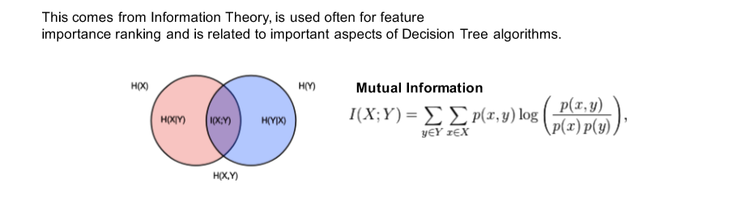-
Pros:
- Can capture non-linear dependencies better
- Works naturally with categorical data
-
Cons：
- Can not express negativedependencies
-
-
Numerical variable group by Categorical variable
- Analysis of Variance (ANOVA):
- ANOVA: finding correlation between different groups of categorical values
- F-test: variation between sample group means divided by variation within sample group
- Two sample T-test
- Analysis of Variance (ANOVA):
-
AUC for Numerical and Categorical
Multivariate
Singular Value Decomposition
The relative difference between singular values is a function of the level of independence of the columns. Applications:
- The low rank approximation & Data Compression
- Cost: the information retained ratio
- Dimensionality Reduction
- Recommender Systems
- Clustering in High Dimensions
Feature Engineering
Note: Deep Learning could do “implicit feature engineering, while not all problems will be a Deep Learning problem. Hence we need “explicit feature engineering”
-
Data Binning
- Group a set of numerical / categorical values into a set of “Bins”, based on pre-defined values.
- Could use Clustering ahead to help determine the groups and bins boundaries.
-
Non-Linear Transformations (Ploynomial Expanion)
- Higher Degree
- Interaction Terms
- The complexity is high, making it infeasible to build and test them all:
- A good technique is to run on a Decision Tree ans make interations from the fisrt few split variables.
- Another method is to use feature importance and make interactions from the more important ones.
- The complexity is high, making it infeasible to build and test them all:
Put them into Applications
- Noisy and Less Info:
- Non-Linear Transformation
- Low Degree: Underfitting
- Higher Degree: Overfitting
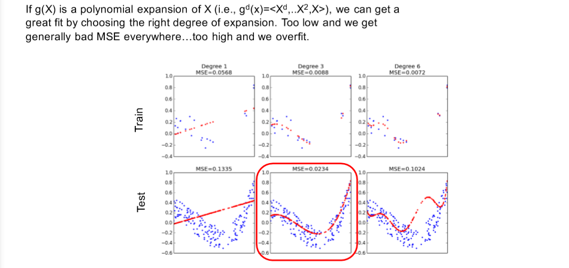
- Bins
- More Bins: hard to borrow information from neighbor bins (using avg Y instead)
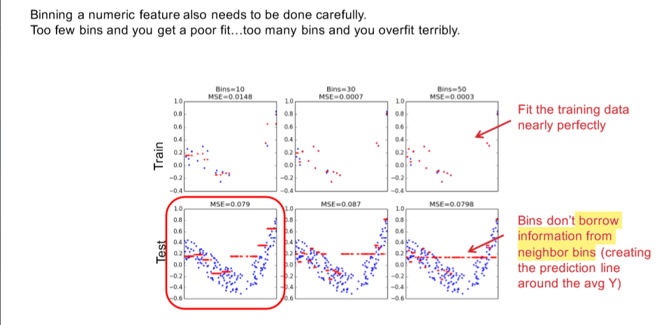
- More Bins: hard to borrow information from neighbor bins (using avg Y instead)
- Non-Linear Transformation
- Info Rich Environment
- Non-Linear Transformation
- Higher Degree less likely to be overfit.
- Bins:
- More bins perform best, because it can approximate any arbitrary curve, but still likely to be overfitting.
- Non-Linear Transformation
Note: some algorithms could do this for you:
- SVMs with Kernel: the use of kernel could map the data into an infinite space, no explicit feature engineering needed.
- Trees: Tree based alogrithms can fit non-linear curves and interactions naturally by partitioning on X and estimating expectations separately for each partition (similiar to binning)
Extract Extra Features
- Datetime
- Weekday, Weekend
- Holiday
- …
- Numerical Variable to Categorical
- Binning
- Clustering
Leakage
- Target Variable Leakage: Having features that are caused by the outcome of the target variable
- Training/Testing Leakage:
- Having records in the training set also appear in the test set.
- [Time Series Related ]Training has features that can not get at the time before testing.
Loss Function & Evaluation Metrics
Loss Function For Classification
Ref. Loss_functions_for_classification
- 0-1 Loss (not convex)
- Surrogate Loss (convex)
- Logistic Loss / Cross Entropy Loss / Log-Likelihood (LL): Logistic Regression
- Hinge Loss: SVM
- Exponential Loss: Boosting Note: The validation loss metric does not have to be the same as the training loss. Sometimes the loss metric for an application (i.e., AUC for validation) is not easy to directly minimize. Insteat we use other metric in training (i.e., logistic loss instead)
Loss Function for Regression
- Mean Squared Error (MSE)
- Mean Absolute Loss
Evaluation Metrics
Confusion Matrix
-
Accuracy: Most intuitive and well known
- Base Rate Dependent
-
Precision: Of all the instances which the model predict as positive, how many are real positive?
- Best used when False Positives are relatively expensive, i.e. budget is limited
- Base Rate Dependent
-
Recall: Of the totoal real positives, how many did the model predict as positive?
- Best used when False Negatives are relatively more expensive, i.e. test tumor
- Base Rate Independent
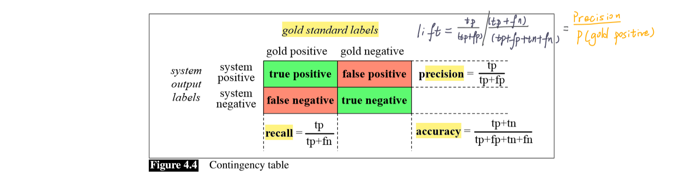
-
F1-Score: Favor both precision and recall. It is the harmonic mean of the two.
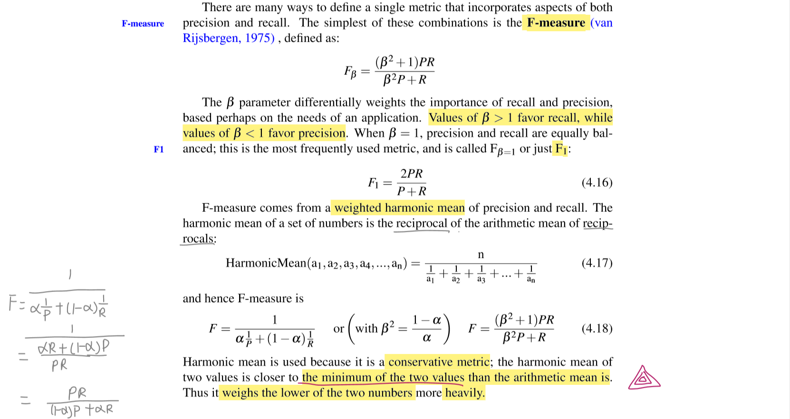 -
Lift: How many more positives outcomes you might expect relative to the baseline stratgey (random guess).
- Used with Recall to do economic analysis (help to decide the threshold)
ROC Curve, AUC, ACLC
-
ROC Curve: the Receiver Operating Characteristic curve.
- True Positive Rate: True Positive / Golden Negative
- False Negative Rate: False Negative / Golden Positive
-
AUC: Area Under the ROC Curve
- Probability Interpretation: The AUC is the probability the model will score a randomly chosen positive class higher than a randomly chosen negative class.
- Invariance to prior class probabilities or class prevalence in the data. Useful for comparing across data sets with different base rates or after down sampling.
- Independence of the decision threshold.
- Is nicely bounded [0, 1]
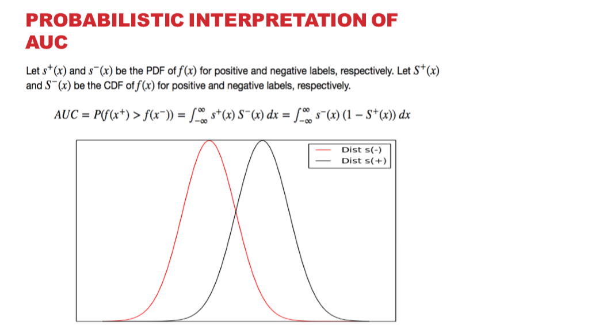
-
ACLC: Area under the Cumulative Lift Curve
Expected Value and Cost Curve
- Expected Value: Help to choose/change a decision threshold based on cost-benefit analysis
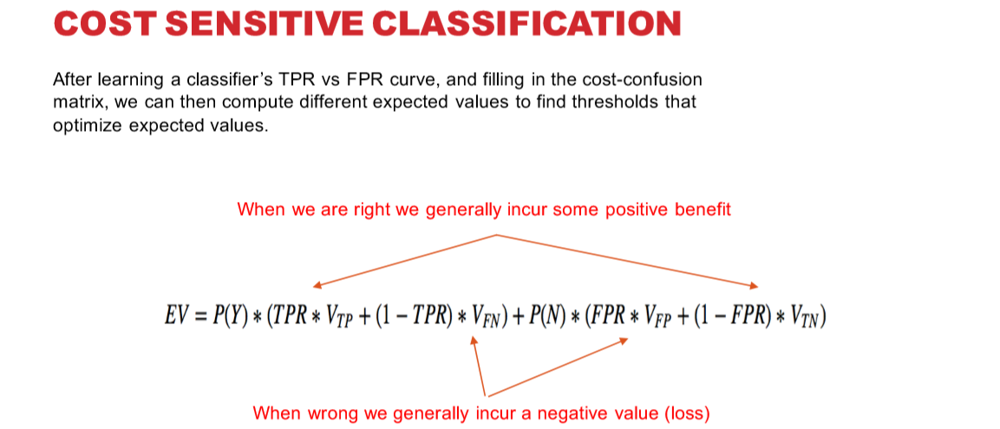
- Cost Curve : Used in unequal cost scenario. The area measures the expected total costs.
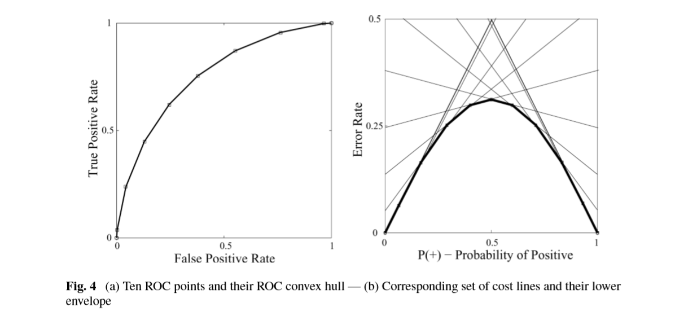
Metrics for Different Applications
- Ranking (Without Threshold)
- AUC, AULC
- Classification
- Accuracy, Precision, Recall, F-Score, Lift
- Density Estimaion (Numerical)
- Regression: MSE, MAE
- Classification Related: Surrogate Losses
Model Selection
Rules:
- Using the same training and validation data for each hypothesis being tested
- Given a tie (statistical or exact), choose the simpler model, i.e. first std error rule
- Use this methodology for all design decisions:
- Hyper-Parameter Selection
- Feature Selection
- Model Selection
Hyper-Parameter Selection
Hyper-Parameter Examples
- Linear Regression & Logistic Regression
- L1 / L2: regularization strategy
- C: regularization weight
- Support Vector Machine
- C: regularization weight
- Kernel and its associated hyperparameters
- Decision Tree
- MaxDepth, Min LeafSize, MinSplitSize
- Random Forest
- Tree Related
- Forest Related
Method
-
Training-Validation-Test
- Training: the training data is used to find the optimal function given the model structure (i.e., fixed algorithm, feature set)
- Validation: the validation data is used to evaluate the loss/risk for a given model configuration. The configuration with the besr loss/risk is selected as the final model
- Test: test data is not used for any parameter or model selection. It is only used as a generalization measure.
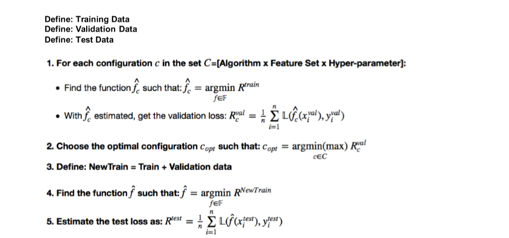
- Note: Training error is our empirical risk and the test set error is our approximation of expected risk.
- Note (for training part): Empirical risk minimization (ERM) is a principle in statistical learning theory which defines a family of learning algorithms and is used to give theoretical bounds on their performance. The core idea is that we cannot know exactly how well an algorithm will work in practice (the true “risk”) because we don’t know the true distribution of data that the algorithm will work on, but we can instead measure its performance on a known set of training data (the “empirical” risk).
- Note (for validation part): Rules to Choose Hyper-Parameter in Validation Set:
- Max / Min (validation loss metric)
- One-StdError Rule: The one first hits: Max / Min (validation loss metric) - One-StdError
-
Cross Validation “Recycle” data using k-fold cross validation as validation scheme.
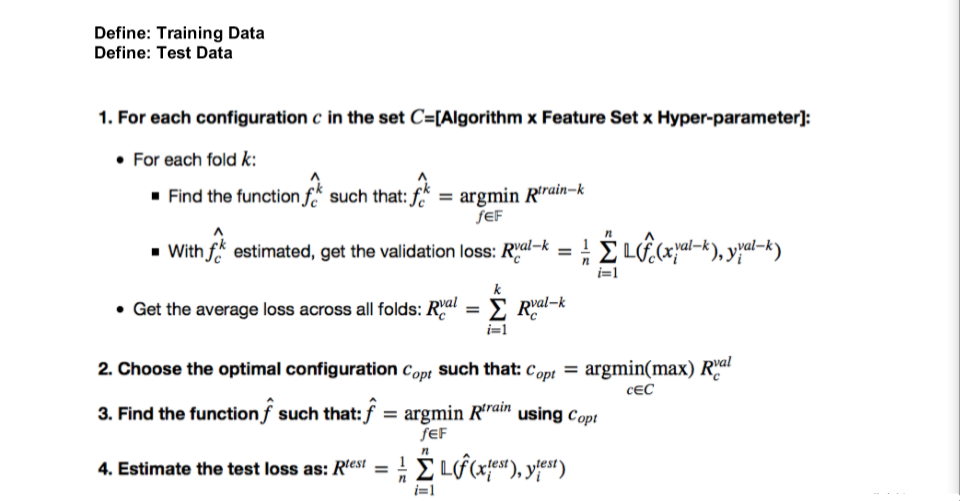- Apply to: SVM, DT…
- Note: Random Forest use out-of-bag error rather than error of cross-validation set (RF Based on Bootstraping)
- Note: Training error is our empirical risk and the test set error is our approximation of expected risk.
-
Nested Cross Validation
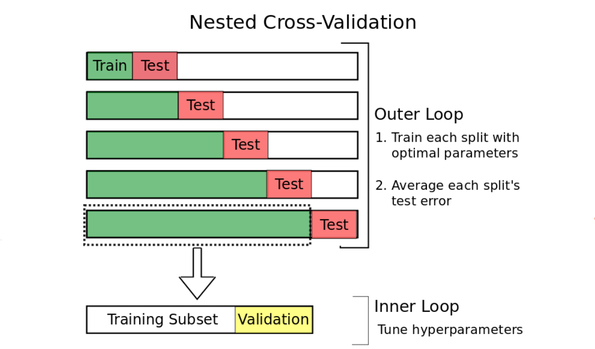- Apply to: Time Series Data
Note: How to split?
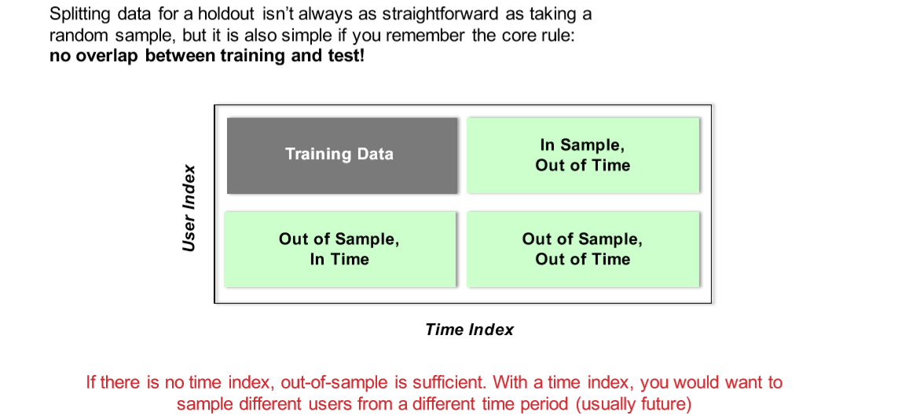
- Apply to: Time Series Data
Note: How to split?
How to Choose Candidate for Hyper-Parameters
- Range & Numers in this Range
- Should span the range of low to high model complexity
- Method:
- Grid Search
- Random Search
Feature Selection
Why Perform Feature Selection?
- Lower expected model variance (less likely to be overfitting)
- Easier interpretation of models
- Better scalability, both in training and deployment
- Lower maintenance costs
Common Feature Selection Techniques
- Naive Subset Selection
- Pre-filter features based on heuristics
- Choose top k based on:
- Mutual information, Correlation with Y
- Has the most coverage / Support (non-na, non-zero percentage)
- Application: bag-of-words selections (long-tail)
- Best Subset Selection
- Choose the best subst of k features from p features
- High complexity
- Stepwise Selection
- Incrementally add/subtract features until model performance stabilizes
- Greedy: incrementally select the kth feature which improve the performance most
- k could also be seen as hyper-parameters
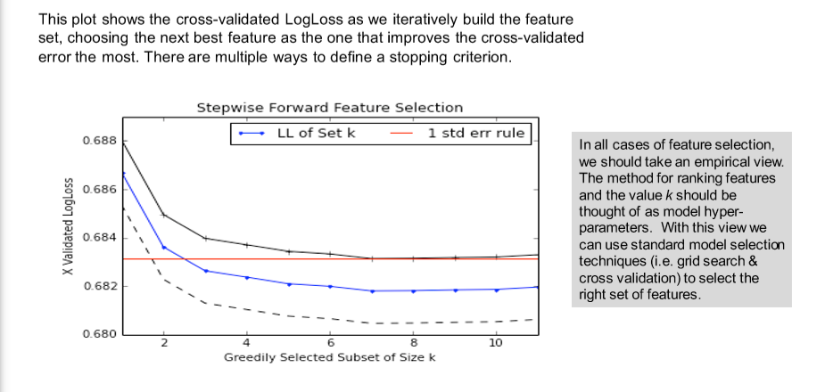
- Dimensionality reduction
- take rank-k approximations of X using SVD
- Regularization
- Implicit, based on adding complexity penalties to loss function
Alogrithm Selection
Types of Alogrithms
- Classic & Simplier Methods:
- Linear Regression
- Decision Tree
- Naive Bayes
- K-Nearest Neighbors
- Black Box but Powerful Methods
- Random Forests
- SVM with Kernel
- Neural Networks
Methods for Model Selection
- First, consider all constraints of the problem, and choose alogrithms under constraints.
- Too little data (generally an estimation problem)
- Too much data (generally a computation problem)
- The assumptions of candidate alogrithms
- Easy to interpret the model?
- Does scalability matter? (training time, predicting time, model storage)
- Try all of them, choose best performer based on evaluation metric
Be Agile: iterate
- Start with a resonable baseline model: the one with little effort but sophisticated enough to capture signals.
- Iterate towards better models: measure cost-revenue at every iteration
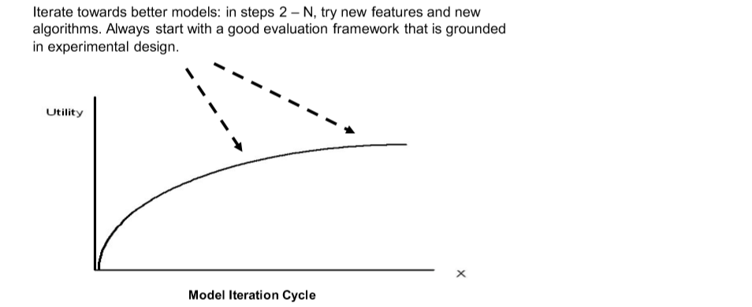